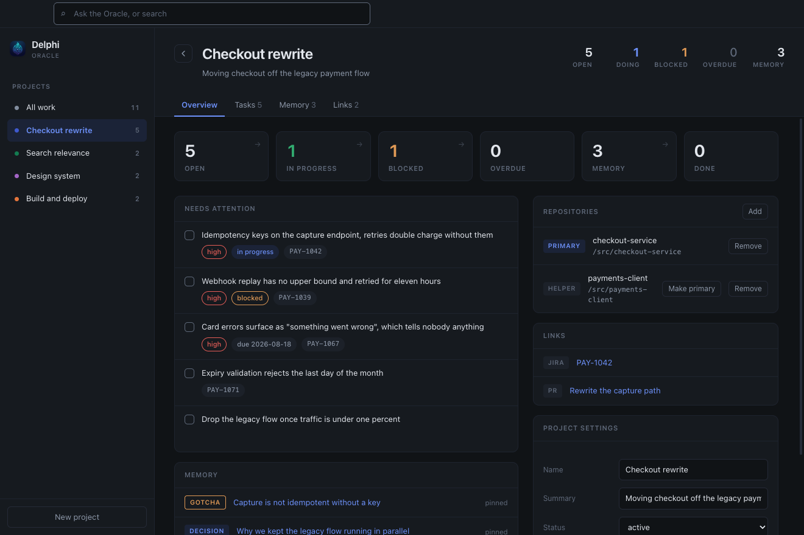
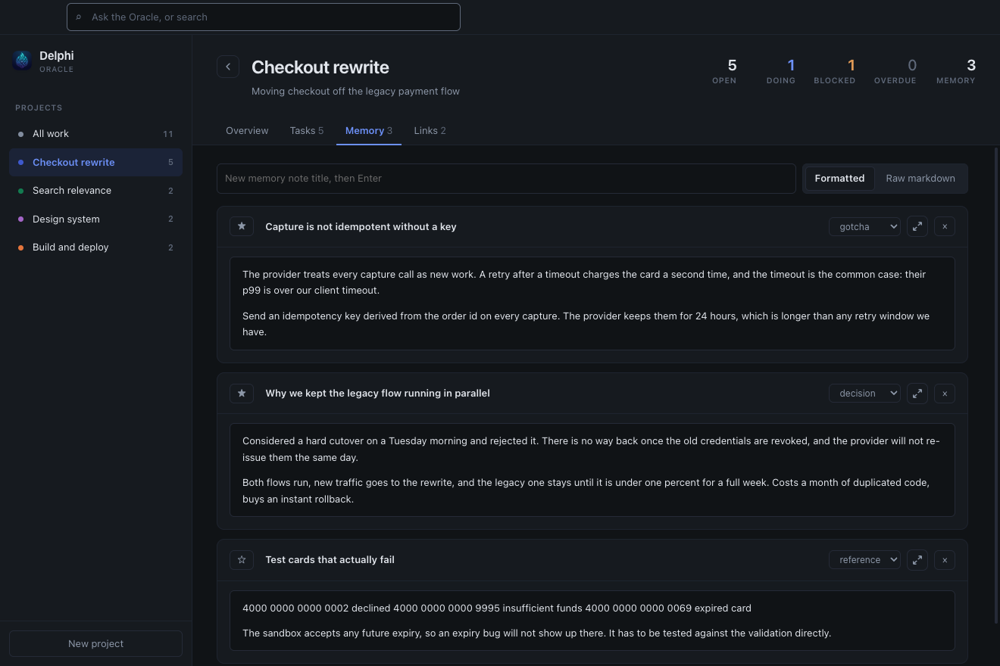

Free and open source
A project tracker your AI agents keep current themselves
Projects hold tasks, memory notes and links. Claude Code and GitHub Copilot read and write the same store over MCP, so what one of them works out is still there for the next session.
The app is Delphi. The thing you ask is the Oracle.

Install
Nothing else is needed to run it. Node is required only to connect an AI agent, because your editor launches the MCP server with its own Node rather than with the app.
| Platform | File | Notes |
|---|---|---|
| macOS, Apple Silicon | Delphi-mac-arm64.dmg | Any Mac since 2020 |
| macOS, Intel | Delphi-mac-x64.dmg | macOS 11 or newer |
| Windows | Delphi-Setup.exe | 64 bit, Windows 10 or 11 |
Local search is sharper with Ollama running, and falls back to a lexical search rather than disappearing when it is not.
The first launch
Delphi is not signed with a paid developer certificate yet, so both systems stop you once and ask. This is expected, and it happens once: after the first launch it opens like anything else.
- Open the
.dmgand drag Delphi into Applications. - Open it. macOS says it "could not verify Delphi is free of malware". Click Done.
- Open System Settings, then Privacy and Security. Scroll down to Security, where it now says Delphi was blocked. Click Open Anyway and confirm with your password or Touch ID.
- macOS remembers, so every launch after this is an ordinary one.
Do not click "Move to Trash". It is the highlighted button in that dialog and it deletes the app. The one you want is Done.
If you would rather do it in one line, this clears the quarantine flag and the app then opens normally:
xattr -dr com.apple.quarantine /Applications/Delphi.appOlder advice for unsigned apps is to right click and choose Open. Apple removed that route in macOS 15, so on a current Mac it does nothing that double clicking does not.
- Run
Delphi-Setup.exe. - SmartScreen shows a blue box saying it protected your PC. Click More info, then Run anyway. That button only appears after More info, which is why the box looks like a dead end.
- Follow the installer. It installs for your user only, so it never asks for administrator rights.
Opening it
Three ways in, and they all reach the same window.
- The application, from Launchpad, the Start menu or the desktop shortcut.
- The keyboard. Ctrl T shows and hides it from anywhere, even when another app has focus.
- The menu bar icon on macOS, or the system tray icon on Windows.
To change the shortcut, open Settings, click the recorder and press the combination you want. It registers straight away and tells you if another application already owns it.
Panel mode
By default Delphi is an ordinary window you can full screen and switch to like anything else. Turn on panel mode in Settings, or in the View menu, and it floats above your work and disappears the moment you click away.
Projects and tasks
The unit here is the project, not the task. Past about thirty items a flat list stops telling you which entries belong to the same piece of work, so each project holds its own tasks, its own notes, and links to the pull requests and tickets that go with it.
| To do this | Do that |
|---|---|
| Add a task | Type on the Tasks tab and press Enter |
| Make it high priority | Start the line with ! |
| Link a ticket | Include a reference like ABC-1234 and it is picked up automatically |
| Change status | Hover a task and click status to cycle todo, doing, blocked, done |
| Move between projects | Hover a task and use the move to menu |
| Narrow the list | Click any count on a project's Overview |
| Undo a mistake | The History tab. Every change is reversible, not just the last one |
Memory notes
Notes are deliberately not tasks. A note is something you want to remember; a task is something you want to finish. Collapsing the two is how trackers turn into junk drawers.
Each note has a kind, which is the difference between a useful store and a pile of text.
| Kind | What belongs in it |
|---|---|
| decision | What was chosen and, more importantly, why the alternative was not |
| gotcha | Something that cost time once and should not cost it twice |
| reference | A value, path or piece of protocol that is hard to look up again |
| contact | Who owns a thing |
| note | Everything else |

Search and the Oracle
Type in the box at the top, or press Cmd F, and Delphi searches tasks and notes together. Behind it sits a knowledge graph: notes and tasks are indexed as entities and the relationships between them, so an agent can ask what connects to a thing rather than only what reads similarly to it.
The payoff is multi-hop. Asking about a database concern can return a version ticket it never mentions, because both were discussed alongside the same build pipeline. That is the question a plain text search cannot answer.
Extraction is deterministic rather than model driven. An invented node is worse than a missing one: a missing node makes a query return less, a wrong one makes it return something false.
Connect an AI agent
Delphi ships an MCP server, so any agent that speaks MCP can use it, and several agents can share one store, because none of them talk to each other. They all talk to this.
One command connects both Claude Code and Copilot, and skips whichever you do not have:
macOS bash install/mcp.sh
Windows powershell -ExecutionPolicy Bypass -File install\mcp.ps1Restart your editor afterwards. MCP servers are loaded at startup, so one registered mid session does not appear until the editor is restarted. This is the single most common reason people think the connection failed.
Give each agent a different DELPHI_ACTOR. That name is recorded
against every change it makes, which is what makes the History tab readable
when more than one agent is working.
What agents can do
| Tool | Purpose |
|---|---|
| list_projects | Projects with open task counts |
| add_project | Create a project when work fits none of the existing ones |
| list_tasks | Tasks, filtered by project or status |
| add_task | Create a task |
| update_task | Change status, priority, detail or project |
| add_note | Store a decision, gotcha or reference |
| search | Search tasks and notes |
| oracle_context | Everything connected to a ticket, service, repo, file or concept |
| oracle_entities | What the graph knows about, most referenced first |
| oracle_ask | Meaning and connections together. The main way to ask what we know |
| recent_activity | What changed, and which agent changed it |
| get_task | One task in full: detail, subtasks, discussion, every status it has been through |
| add_comment | Leave your reasoning on a task, for whoever picks it up next |
| queue_status | What is waiting for an agent, and what other agents are holding |
| queue_next | Claim the next piece of work and get everything needed to do it |
| queue_complete | Finish a claimed task with a summary |
| queue_release | Give a claimed task back, with a reason |
| queue_extend | Push your lease out because you are still working |
Agents coordinate through shared state, not messages. One writes a task, another sees it and picks it up, and both leave a trail. There is no mechanism here for one agent to command another.
Making it automatic
Connecting the server is not enough on its own. Paste the prompt from
AGENTS.md
into your agent's standing instructions, whether that is
CLAUDE.md, .github/copilot-instructions.md, or
wherever yours reads from.
It tells the agent to check the tracker at the start of a session, search stored notes before searching a repository, and record findings as it goes rather than waiting to be asked.
Where your data lives
One SQLite file, delphi.db. Nothing is sent anywhere, there is
no account, and search runs against a model on your own machine.
| Install | Database and settings | Markdown vault |
|---|---|---|
| macOS | ~/Library/Application Support/Delphi | ~/Documents/Delphi |
| Windows | %APPDATA%\Delphi | Documents\Delphi |
| From source | Beside the source | vault/, beside the source |
Help, then Show Data Folder opens whichever applies. The first time an installed copy starts it looks for a checkout's database in the usual places and brings it across, so upgrading from a source install does not present you with an empty tracker.
Backups
File, then Back Up Database. That runs
VACUUM INTO rather than copying the file, which matters: the
database uses write-ahead logging, so recent rows can still be sitting in
delphi.db-wal and a plain copy produces a backup quietly
missing the last session.
The markdown mirror
Every note is also written out as a markdown file, so the knowledge is not trapped in a format only this application understands. Obsidian, ripgrep, git or any editor can read it. The database is the source of truth and the mirror is one way, deliberately: two way sync between a folder and a database is where these things break.
Keyboard shortcuts
| Keys | Does |
|---|---|
| Ctrl T | Show or hide Delphi, from anywhere |
| Cmd F | Search everything |
| Cmd N | New task |
| Cmd Shift N | New memory note |
| Cmd Shift P | New project |
| Cmd 1 to 4 | What's new, Tasks, Memory, History |
| Cmd [ | Back |
| Esc | Clear the search, or dismiss the panel |
On Windows, read Cmd as Ctrl throughout.
Troubleshooting
My agent cannot see Delphi
Restart the editor. MCP servers are loaded at startup and one registered
mid session will not appear until then. If it still does not, check the
server is registered with claude mcp list, and note that
Copilot needs Agent mode: Ask mode ignores MCP tools.
macOS says the app is damaged
It is not. The quarantine flag survived the copy. Run
xattr -dr com.apple.quarantine /Applications/Delphi.app
The shortcut does nothing
Another application already owns that combination. Open Settings, click the recorder and choose a different one. Delphi tells you when a combination is taken rather than failing silently.
Search results seem shallow
Embeddings need Ollama running with nomic-embed-text pulled.
Without it, search falls back to a lexical match: it degrades rather than
disappearing, but it will not find things that are worded differently.
Running from source
For the development copy, which is also the only way to get the
make targets and the Desktop launcher.
git clone https://github.com/Ray-Hughes/delphi.git ~/delphi
cd ~/delphi
make setup # dependencies, AI agents, Desktop icon
make startA checkout keeps its database, settings and vault beside the source, so it does not touch anything an installed copy is using and the two can be run side by side.
Building the installers needs npm run dist:mac or
npm run dist:win, each on its own platform: a Windows installer
built on macOS needs Wine, and a dmg cannot be made anywhere but macOS.